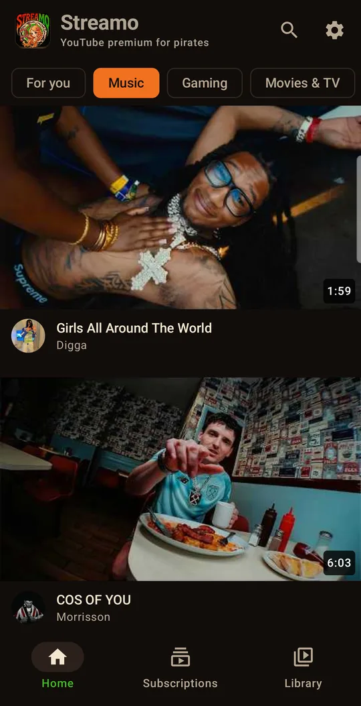
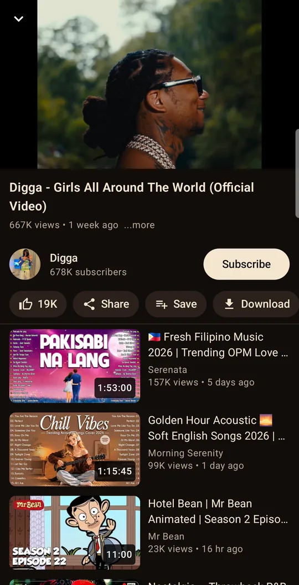
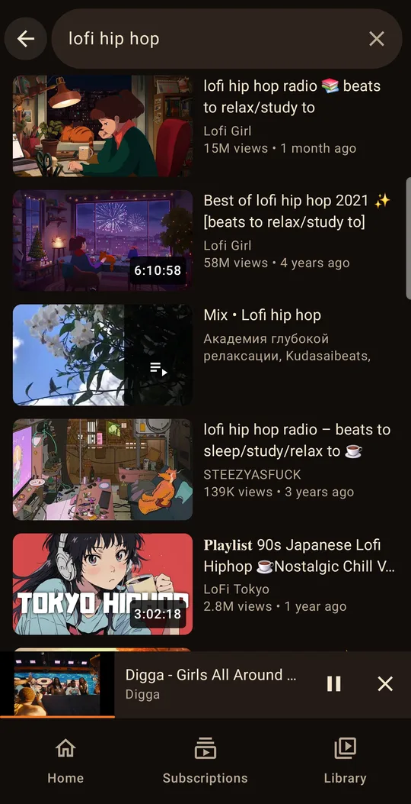
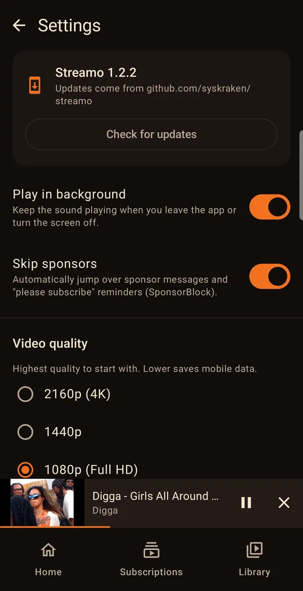
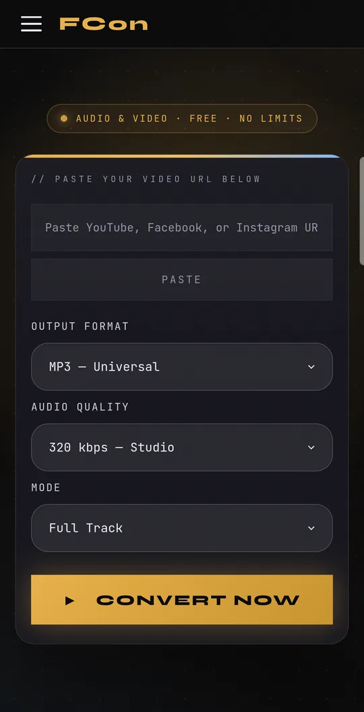
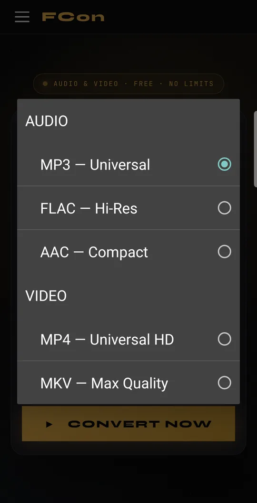
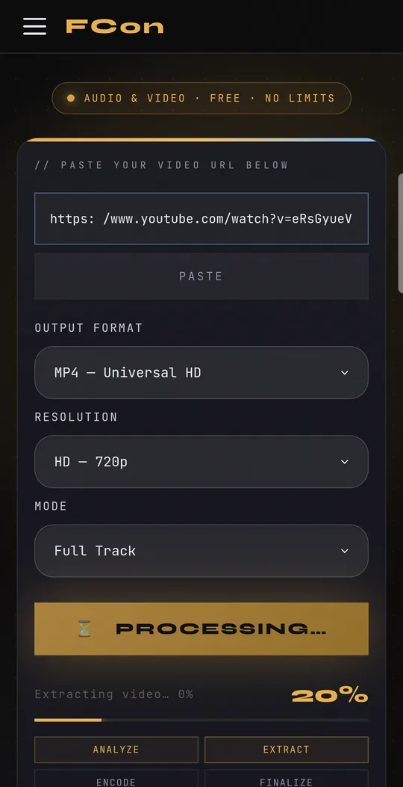
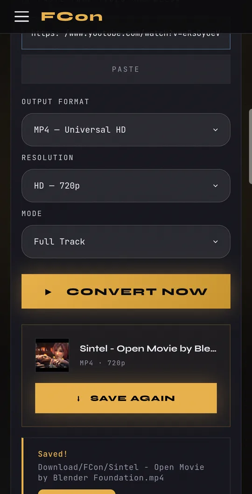
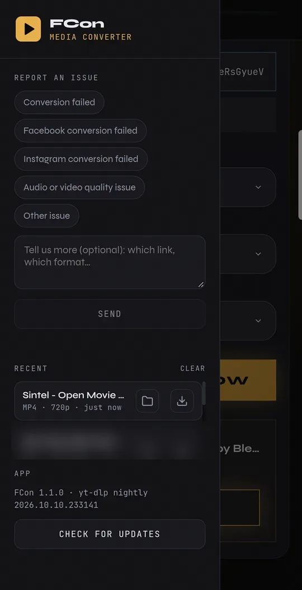

Small, free apps that do one thing well. Every download comes from the app's own GitHub release, and each app updates itself from there.
An ad-free YouTube player that keeps going with the screen off. No account, nothing tracked — your subscriptions and history stay on your phone.




Turns YouTube, Facebook and Instagram links into MP3 or MP4 files, right on your phone. The conversion runs on the phone itself, so there's no server in between to get blocked.
Downloads/FCon




These apps aren't on the Play Store, so Android asks a couple of extra questions the first time. It takes about a minute.
Open this page on your Android phone and tap Download for Android. The file ends in .apk.
Open the downloaded file. Android asks to allow installing apps from your browser or Files app — allow it once, then go back.
Tap Install. Google Play Protect may scan the app first; that's normal for apps from outside the Play Store. Later updates come from inside the app.